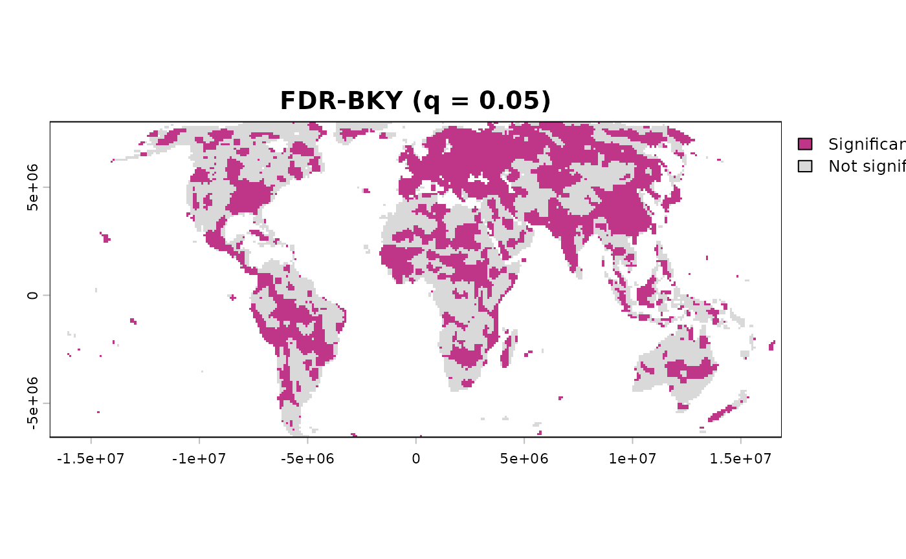
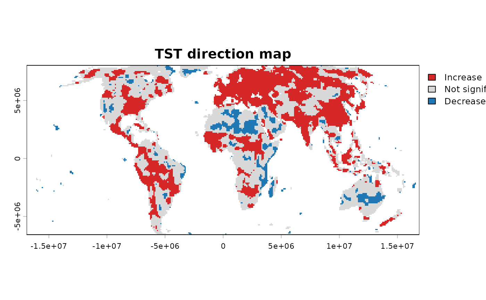

True Significant Trends (TST): the full pipeline in one call
Source:R/workflow_tst.R
workflow_tst.RdImplements the complete workflow for robust statistical inference of
monotonic trends in gridded raster time series. The main entry point
of sptrends: chains prewhiten(), trend_test(), slope_estimator(),
and fdr_correction(), in that order, into the True Significant
Trends (TST) workflow. Each step is optional and all underlying
parameters remain available directly on the individual functions –
workflow_tst() does not replace them, it saves wiring the calls
together for the common case, and returns a single "tst" object
with its own print(), summary(), and plot() methods.
Usage
workflow_tst(
x,
prewhiten = TRUE,
prewhiten_args = list(),
export_dw = FALSE,
cmk_args = list(),
theil_sen = TRUE,
theil_sen_args = list(),
alpha = 0.05,
moran_check = FALSE,
fdr_method = c("BKY", "BH", "BY"),
q = 0.05,
bky_implementation = c("multtest", "original"),
report = TRUE,
verbose = TRUE,
n_cores = 1
)Arguments
- x
A
terra::SpatRaster; each layer is one time step, in increasing chronological order.- prewhiten
(Preprocessing) Logical. If
TRUE(default), runprewhiten()first. IfFALSE,xis supplied to the trend test unmodified.- prewhiten_args
A named list of extra arguments forwarded to
prewhiten()(e.g.list(dw_method = "test")). Workflow-managed transport and reporting arguments cannot be overridden here.- export_dw
Logical. If
TRUE, include the Durbin-Watson prewhitening diagnostics (diagnosticsfromprewhiten()) in the return value, even though the trend test itself does not need them. Ignored ifprewhiten = FALSE. DefaultFALSE.- cmk_args
(Trend detection) A named list of extra arguments forwarded to
trend_test()(e.g.list(window_size = 5L)for a broader CMK region, orlist(method = "MK", n_cores = 4)). The default empty list preserves the 3 by 3 CMK region described by Neeti and Eastman (2011), as implemented in TerrSet's Kendall module; changing it creates a TST-inspired variant rather than an exact reproduction of the published workflow.- theil_sen
(Slope estimation) Logical. If
TRUE(default), also compute the Theil-Sen slope (magnitude of change) viaslope_estimator()– see "Computational considerations" above before leaving this on for long time series.- theil_sen_args
A named list of extra arguments forwarded to
slope_estimator()(e.g.list(max_pairs = 20000, n_cores = 4)). Ignored iftheil_sen = FALSE.smooth_neighbourhoodstays atslope_estimator()'s own default (FALSE) unless set here (e.g.list(smooth_neighbourhood = TRUE)) – see "Theil-Sen has a real computational cost" above for why.- alpha
Numeric vector of significance threshold(s) used for reporting the (uncorrected) trend result – supplied to
trend_summary()asalpha, and used as the single threshold fortrend_maps():0.05if it is one of the values inalpha, otherwise the strictest (smallest) value supplied. Defaults to a single0.05, matchingq's own default – a normal analysis picks one alpha and one q, not several at once. Pass a vector explicitly (e.g.alpha = c(0.1, 0.05, 0.01)) to compare several thresholds side by side intrend_summary_tableinstead. See "Statistical assumptions:alphaandq" above.- moran_check
(Multiple testing) Logical. Forwarded to
fdr_correction()as-is – ifTRUE, runsspatial_autocorrelation()on the trend p-value raster as part of the FDR step. DefaultFALSE(Moran's I stays a separate, deliberate diagnostic – see the package vignette).- fdr_method
Character vector supplied as
methodtofdr_correction(). The Usage displays all supported values:"BKY","BH"and"BY"; when omitted,"BKY"remains the default originally used in the TST methodology (Gutiérrez-Hernández & García, 2025): it adapts to the estimated proportion of true nulls, gaining statistical power over BH while targeting false-discovery-rate control. Supply one method or a vector of methods; BY is the conservative option for arbitrary dependence. Set toNULLto skip FDR correction entirely.- q
Numeric. Target FDR level, forwarded to
fdr_correction()– not an adjusted or renamedalpha: it limits the expected false discovery proportion among rejected hypotheses. Seefdr_correction()and "Statistical assumptions:alphaandq" above.- bky_implementation
"multtest"(default, unchanged from previous versions) or"original", forwarded tofdr_bky()viafdr_correction()– seefdr_bky()'s own documentation for the difference between the two. Ignored iffdr_methoddoes not include"BKY".- report
(Reporting) Logical. If
TRUE(default), each step prints its own summary table and draws its diagnostic plots as it runs (same effect as calling each function directly withreport = TRUE). Set toFALSEfor silent, plot-free programmatic use.- verbose
Logical. Print progress messages and elapsed time for the complete workflow. Per-stage times are also returned in
timing.- n_cores
Integer.
1(default): every step runs sequentially.> 1: builds oneparallel::makeCluster()PSOCK cluster, shared across every parallel step below (currently the CMK and Theil-Sen steps) instead of each step creating and tearing down its own – avoiding the repeated process-spawn overhead of doing that two or three times in a row for what is, from the caller's own perspective, one parallel request. The cluster is closed automatically whenworkflow_tst()returns. Settingn_coresinsidecmk_args/theil_sen_argsdirectly still works exactly as before (each step falls back to building its own cluster from that value) – but only when this top-leveln_coresis left at its default of1; when both are set, this one wins and the per-stepn_coresinsidecmk_args/theil_sen_argsis ignored, since a single shared cluster and per-step separate ones cannot both apply to the same call.
Value
An object of class c("tst", "sptrends") (the second, shared
with workflow_rta()'s own return value, is for print()/summary()/
plot() – see print.sptrends()): a list
with
- prewhiten
The full output of
prewhiten(), orNULLifprewhiten = FALSE.- dw_diagnostics
The prewhitening
diagnosticsraster, only ifexport_dw = TRUE.- trend
The output of
trend_test().- trend_summary_table
The output of
trend_summary()(invisible data frame).- theil_sen
The output of
slope_estimator(), orNULLiftheil_sen = FALSE. Not smoothed by default (see thetheil_sen_argsnote above) – checktheil_sen_smoothedif you need to know whether it was (e.g. because you set it yourself).- theil_sen_smoothed
Logical: whether
theil_senwas computed withsmooth_neighbourhood = TRUE.FALSEby default;NULLiftheil_sen = FALSE.- fdr
The output of
fdr_correction(), orNULLiffdr_method = NULL.- timing
A named list of elapsed seconds per step actually run (
prewhiten,cmk,theil_sen,fdr– only the ones that ran are present), each measured withSys.time()around that step's own function call. Coarse (whole-step, not line-by-line) and not a substitute for a proper profiler, but enough for noticing which step dominates on your own data.
Use print() for a one-line summary, summary() for the full detail,
and plot() for a map – see plot.sptrends().
Details
Unlike many trend-analysis workflows, TST separates preprocessing,
hypothesis testing, effect-size estimation, and multiple-testing
correction into independent but composable steps.
workflow_tst() simply orchestrates those steps into a reproducible
pipeline without hiding any of their parameters.
Moran's I (spatial_autocorrelation()) is not part of this pipeline:
it is an independent, general spatial diagnostic. Its optional use on
inferential fields can reveal dependence relevant to FDR interpretation,
but cannot verify all assumptions of an FDR procedure – see the package
vignette.
Function type: Core function – the complete published TST workflow.
Typical use
raster time series
|
workflow_tst()
|
selective prewhitening -> CMK -> Theil-Sen -> adaptive FDR
|
one `tst` result containing every stageFor seasonal input, first use compute_anomalies() and pass its
anomalies raster. For long series, consider setting max_pairs
through theil_sen_args; see "Computational considerations" below.
Methodological details
How it works.
Input raster
|
(optional) prewhiten -- removes serial autocorrelation
|
trend_test -- is there a monotonic trend? (CMK)
|
(optional) slope_estimator -- how fast? (Theil-Sen or OLS)
|
(optional) FDR correction -- which cells survive multiple testing?
|
"tst" objectThe four steps run in this fixed order because each one's own assumptions depend on what came before it: prewhitening needs to happen before the trend test, since the test assumes independent observations; the slope is estimated on the same (optionally prewhitened) series the test itself used, so the two describe the same data; and FDR correction needs the test's own p-values to exist first. Prewhitening, slope estimation, and FDR correction are each individually optional – not every analysis needs all three (a quick exploratory look at significance alone might skip slope and FDR entirely; data already known to have negligible serial correlation might skip prewhitening) – but the trend test itself is not optional, since every other step either feeds into it or consumes its output. The returned object keeps every intermediate result it computed (see "Value" below), not only the final one, so that any step's own output can be inspected or reused without recomputing the whole pipeline.
Statistical assumptions: alpha and q.
This is one of the most common mistakes in gridded trend analysis, so
it is worth spelling out: alpha (e.g. 0.05) is defined for a
single hypothesis test. A raster is not one test – it is one test
per cell, potentially thousands of them run simultaneously. Applying
alpha cell by cell, as if each cell were the only test being run, is
exactly the multiple-testing error this package's FDR step exists to
fix (see the "Warning" section of ?trend_test); it is
not a harmless simplification.
It is common practice to set q equal to alpha (e.g. both 0.05) for
convenience and comparability between the uncorrected and corrected
results reported here – this function does not enforce that, alpha
and q are independent arguments. But equal values does not mean equal
meaning: alpha bounds the error rate of each individual cell's test,
while q bounds the expected proportion of false positives among all
the cells called significant after correction (see fdr_correction() for the
full distinction). Do not read trend_summary_table (based on alpha,
uncorrected) and the FDR results (based on q) as answering the same
question just because the numbers match. Unlike alpha, which this
function reports at three conventional levels for context (see
alpha below), q = 0.05 has little reason to change: it is the
standard target FDR level in the literature this package builds on,
and lowering it (e.g. to 0.01) mainly costs statistical power rather
than offering a meaningfully different guarantee.
Statistical assumptions: monotonicity and seasonality.
Every step here (prewhitening, the Contextual Mann-Kendall test,
Theil-Sen) is designed around a monotonic trend – a consistent
tendency to increase or decrease – not a periodic/seasonal cycle. If
x has a seasonal cycle (e.g. raw monthly data with an annual signal),
remove it first with compute_anomalies() and pass the anomalies to
workflow_tst(), not the raw seasonal series.
Computational considerations.
Unlike the Mann-Kendall S statistic, the Theil-Sen slope needs every
pairwise slope in the series (n*(n-1)/2 per cell) to take their
median – it cannot be accumulated as a running sum, so it does not
scale the same way. For short series (a few dozen time steps) this is
unnoticeable; for long series (hundreds to thousands of steps, e.g.
multi-decade monthly data) it can become the slowest step in the whole
workflow. theil_sen = TRUE by default, to match the published TST
workflow, but for long series consider theil_sen = FALSE, or tune
theil_sen_args (max_pairs to subsample pairs, n_cores to
parallelise) – see slope_estimator(). smooth_neighbourhood stays
at slope_estimator()'s own default (FALSE) unless you set it
yourself via theil_sen_args = list(smooth_neighbourhood = TRUE):
that mechanism is not part of the published TST method (neither TST
nor RTA originally included any such smoothing – it is this
package's own optional addition on top of both), so there is no
principled reason for workflow_tst() and workflow_rta() to
default to different
values for it – see ?slope_estimator's "Optional queen-neighbourhood
smoothing" section for exactly what it does and why it is
off by default.
Limitations. The workflow targets monotonic trends and does not detect abrupt breaks, periodicity, or general nonlinear change. Optional stages permit exploratory variants, but only the complete default configuration reproduces the published TST workflow.
Quality assurance. Each component is validated independently in its
own function. Workflow-level tests additionally verify stage order,
optional prewhitening, argument forwarding, shared-cluster behaviour,
sequential/parallel equivalence, timings, S3 structure, summaries,
plots, and propagation of raw and FDR-corrected results. See ?sptrends
for the internal release protocol and external numerical controls.
References
Source of this workflow (primary reference – this pipeline is a direct implementation of it):
Gutiérrez-Hernández, O. and García, L.V. (2025) Uncovering true significant trends in global greening. Remote Sensing Applications: Society and Environment, 37, 101377. doi:10.1016/j.rsase.2024.101377
Step 1, selective AR(1) prewhitening (see prewhiten() for
the full reference list, including the Durbin-Watson gate):
Wang, X.L. and Swail, V.R. (2001) Changes of Extreme Wave Heights in Northern Hemisphere Oceans and Related Atmospheric Circulation Regimes. Journal of Climate, 14(10), 2204-2221.
Step 2, Contextual Mann-Kendall (see trend_test() for
the full reference list, including the foundational Mann-Kendall
statistic it builds on):
Neeti, N. and Eastman, J.R. (2011) A Contextual Mann-Kendall Approach for the Assessment of Trend Significance in Image Time Series. Transactions in GIS, 15(5), 599-611. doi:10.1111/j.1467-9671.2011.01280.x
Step 3, Theil-Sen slope (see slope_estimator() for the full
reference list):
Theil, H. (1950) A rank-invariant method of linear and polynomial regression analysis. Indagationes Mathematicae, 12, 85-91 (Part I; published in three parts). No DOI available (pre-DOI-era publication).
Sen, P.K. (1968) Estimates of the regression coefficient based on Kendall's tau. Journal of the American Statistical Association, 63, 1379-1389. doi:10.1080/01621459.1968.10480934
Step 4, FDR correction – BKY (default) and BH (see fdr_bky() and
fdr_correction() for the full reference lists):
Benjamini, Y., & Hochberg, Y. (1995) Controlling the False Discovery Rate: A Practical and Powerful Approach to Multiple Testing. Journal of the Royal Statistical Society: Series B, 57, 289-300. doi:10.1111/j.2517-6161.1995.tb02031.x
Benjamini, Y., Krieger, A. M., & Yekutieli, D. (2006) Adaptive Linear Step-Up Procedures that Control the False Discovery Rate. Biometrika, 93(3), 491-507. doi:10.1093/biomet/93.3.491
See also
Other pipeline functions:
workflow_rta(),
workflow_trends()
Examples
# \donttest{
# Annual mean NDVI from the bundled environmental dataset.
r <- read_ordered_stack(example_data("vhp_ndvi"))
#> Temporal order auto-detected with pattern '(19[0-9]{2}|20[0-9]{2})'.
#> Temporal order verification (mandatory, cannot be skipped):
#> stack_position detected_number file
#> 1 1982 VHP_SMN_annual_ndvi_1982.tif
#> 2 1983 VHP_SMN_annual_ndvi_1983.tif
#> 3 1984 VHP_SMN_annual_ndvi_1984.tif
#> 4 1985 VHP_SMN_annual_ndvi_1985.tif
#> 5 1986 VHP_SMN_annual_ndvi_1986.tif
#> 6 1987 VHP_SMN_annual_ndvi_1987.tif
#> 7 1988 VHP_SMN_annual_ndvi_1988.tif
#> 8 1989 VHP_SMN_annual_ndvi_1989.tif
#> 9 1990 VHP_SMN_annual_ndvi_1990.tif
#> 10 1991 VHP_SMN_annual_ndvi_1991.tif
#> 11 1992 VHP_SMN_annual_ndvi_1992.tif
#> 12 1993 VHP_SMN_annual_ndvi_1993.tif
#> 13 1994 VHP_SMN_annual_ndvi_1994.tif
#> 14 1995 VHP_SMN_annual_ndvi_1995.tif
#> 15 1996 VHP_SMN_annual_ndvi_1996.tif
#> 16 1997 VHP_SMN_annual_ndvi_1997.tif
#> 17 1998 VHP_SMN_annual_ndvi_1998.tif
#> 18 1999 VHP_SMN_annual_ndvi_1999.tif
#> 19 2000 VHP_SMN_annual_ndvi_2000.tif
#> 20 2001 VHP_SMN_annual_ndvi_2001.tif
#> 21 2002 VHP_SMN_annual_ndvi_2002.tif
#> 22 2003 VHP_SMN_annual_ndvi_2003.tif
#> 23 2004 VHP_SMN_annual_ndvi_2004.tif
#> 24 2005 VHP_SMN_annual_ndvi_2005.tif
#> 25 2006 VHP_SMN_annual_ndvi_2006.tif
#> 26 2007 VHP_SMN_annual_ndvi_2007.tif
#> 27 2008 VHP_SMN_annual_ndvi_2008.tif
#> 28 2009 VHP_SMN_annual_ndvi_2009.tif
#> 29 2010 VHP_SMN_annual_ndvi_2010.tif
#> 30 2011 VHP_SMN_annual_ndvi_2011.tif
#> 31 2012 VHP_SMN_annual_ndvi_2012.tif
#> 32 2013 VHP_SMN_annual_ndvi_2013.tif
#> 33 2014 VHP_SMN_annual_ndvi_2014.tif
#> 34 2015 VHP_SMN_annual_ndvi_2015.tif
#> 35 2016 VHP_SMN_annual_ndvi_2016.tif
#> 36 2017 VHP_SMN_annual_ndvi_2017.tif
#> 37 2018 VHP_SMN_annual_ndvi_2018.tif
#> 38 2019 VHP_SMN_annual_ndvi_2019.tif
#> 39 2020 VHP_SMN_annual_ndvi_2020.tif
#> 40 2021 VHP_SMN_annual_ndvi_2021.tif
#> 41 2022 VHP_SMN_annual_ndvi_2022.tif
#> 42 2023 VHP_SMN_annual_ndvi_2023.tif
 #> Stack built: 42 layers, 146 x 338 cells.
#> >> [read_ordered_stack()] elapsed: 0.16 s
# Run the full workflow: prewhiten -> Contextual Mann-Kendall ->
# Theil-Sen -> FDR-BKY (only BKY, not BH -- see the "fdr_method"
# argument below for why).
result <- workflow_tst(r, report = FALSE, verbose = FALSE)
# A "tst" object: printing it gives a one-line-per-step summary
# (cells modified by prewhitening, the trend test's cell count, the
# Theil-Sen slope range, and how many cells are significant after
# FDR-BKY correction).
result
#> <True Significant Trends (TST) result>
#> Prewhitening: 5987 of 15675 cells modified (38.2%)
#> Trend test: 15675 cells (Sm statistic)
#> Theil-Sen slope: median 0.0002692 (range -0.01121 to 0.009657)
#> Significant after FDR-BKY: 7881 (50.3%)
#> Use summary() for details, plot() for a map.
# Three reports worth seeing: how much of the map is significant at
# all, how fast the significant cells are changing, and which way.
plot(result, which = "significance")
#> Stack built: 42 layers, 146 x 338 cells.
#> >> [read_ordered_stack()] elapsed: 0.16 s
# Run the full workflow: prewhiten -> Contextual Mann-Kendall ->
# Theil-Sen -> FDR-BKY (only BKY, not BH -- see the "fdr_method"
# argument below for why).
result <- workflow_tst(r, report = FALSE, verbose = FALSE)
# A "tst" object: printing it gives a one-line-per-step summary
# (cells modified by prewhitening, the trend test's cell count, the
# Theil-Sen slope range, and how many cells are significant after
# FDR-BKY correction).
result
#> <True Significant Trends (TST) result>
#> Prewhitening: 5987 of 15675 cells modified (38.2%)
#> Trend test: 15675 cells (Sm statistic)
#> Theil-Sen slope: median 0.0002692 (range -0.01121 to 0.009657)
#> Significant after FDR-BKY: 7881 (50.3%)
#> Use summary() for details, plot() for a map.
# Three reports worth seeing: how much of the map is significant at
# all, how fast the significant cells are changing, and which way.
plot(result, which = "significance")

plot(result, which = "slope")
 plot(result)
plot(result)

# }